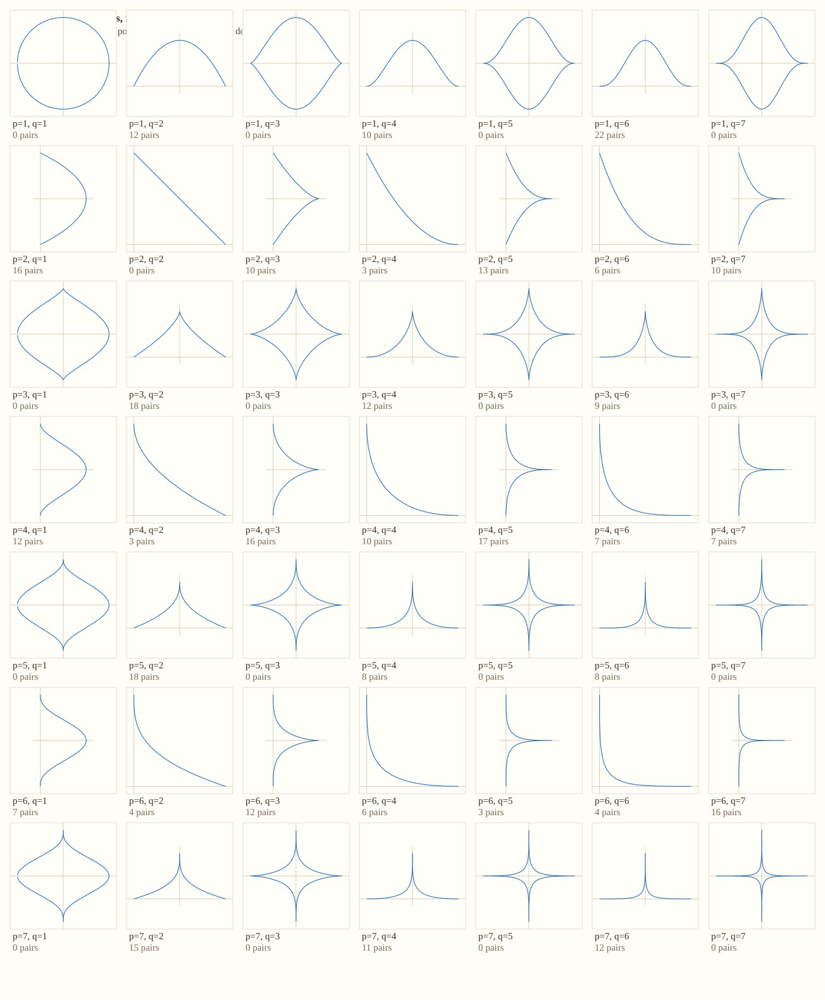
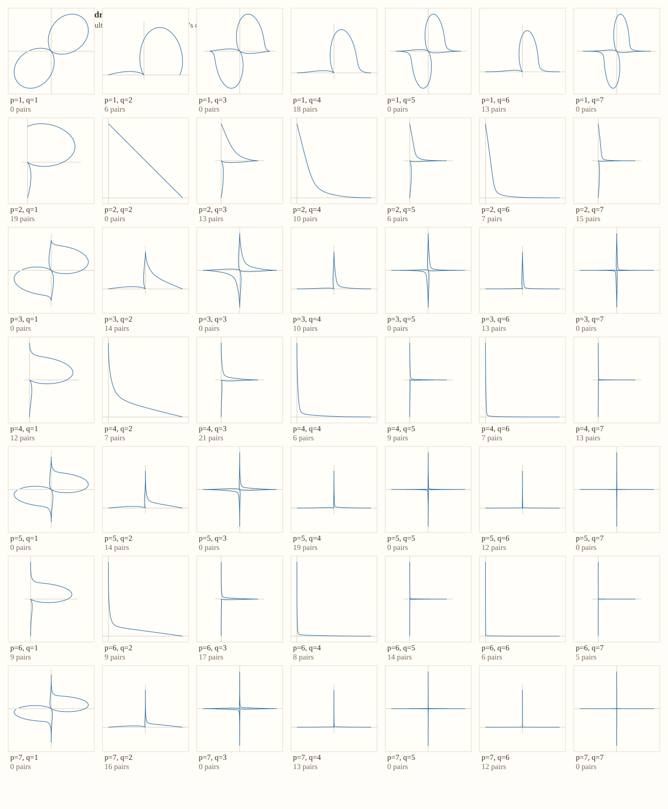
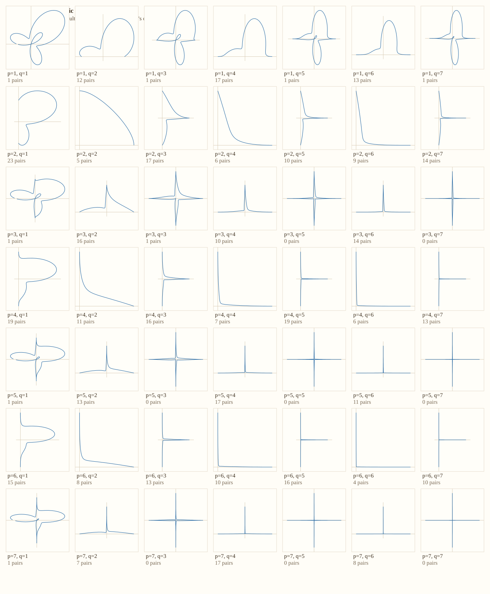
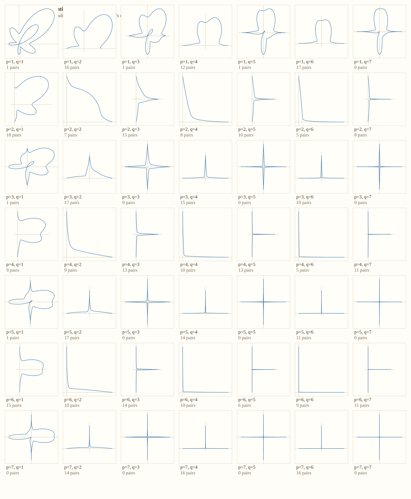
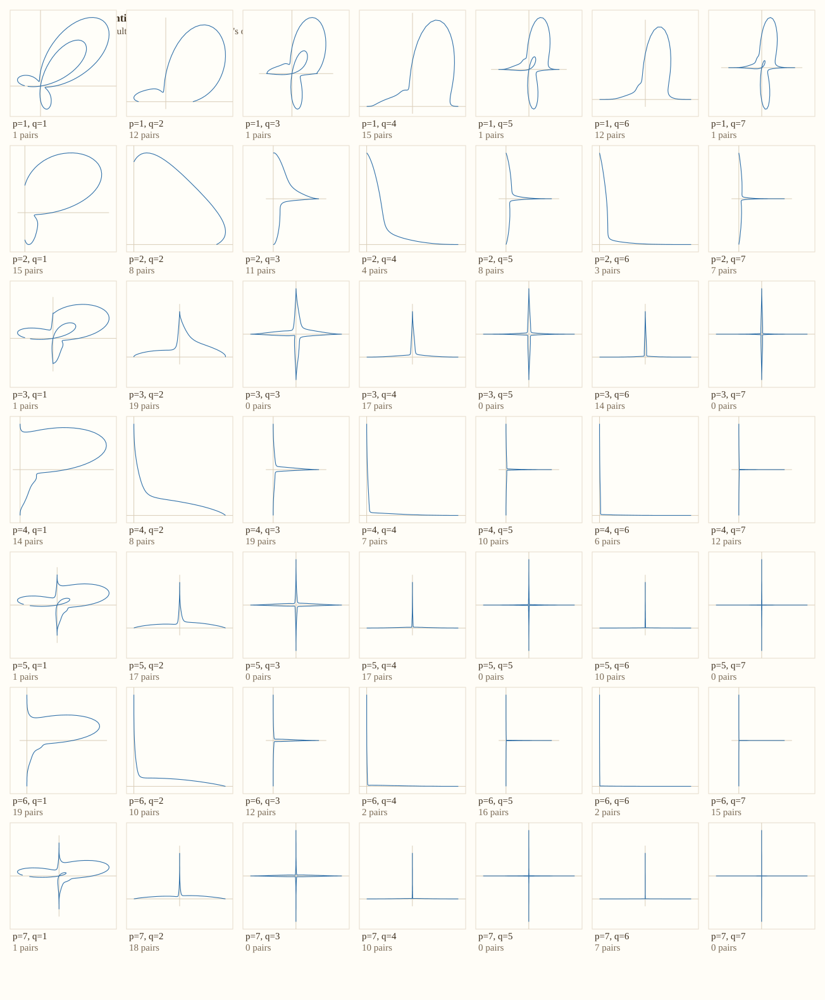
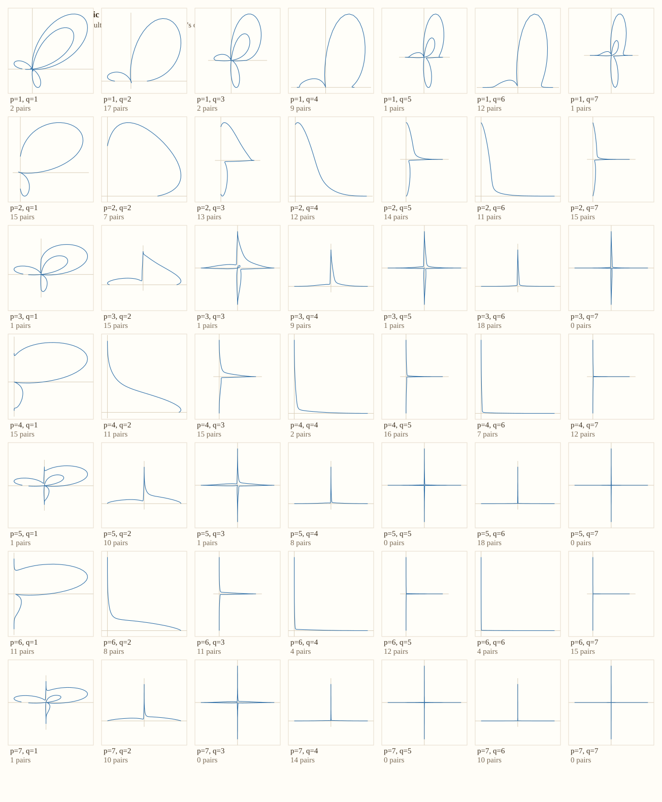
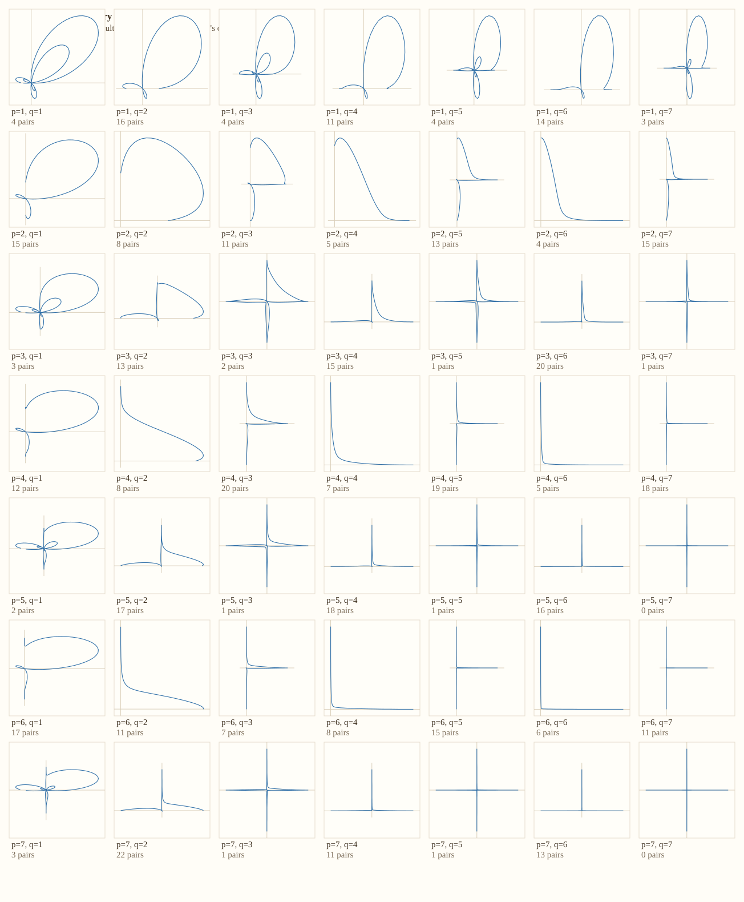

x = C(t)^p, y = S(t)^q with C = (1−t²)/(1+t²), S = 2t/(1+t²); the middle-term polynomial P of (x+y)^n is used in 2D only: as a tint, or as a radial scale. Stations: t = u/(1−|u|), u = i/100 — no sin, no cos. Joins are drawn straight.

workbench/hybrid-sheets/colour.svg
workbench/hybrid-sheets/radius-1-quadratic.svg
workbench/hybrid-sheets/radius-2-cubic.svg
workbench/hybrid-sheets/radius-3-quintic-central.svg
workbench/hybrid-sheets/radius-4-quintic-all-four.svg
workbench/hybrid-sheets/radius-5-cubic-and-quintic.svg
workbench/hybrid-sheets/radius-6-every-term.svgData: workbench/hybrid-sheets/index.json; generator: scripts/hybrid_sheets.py.